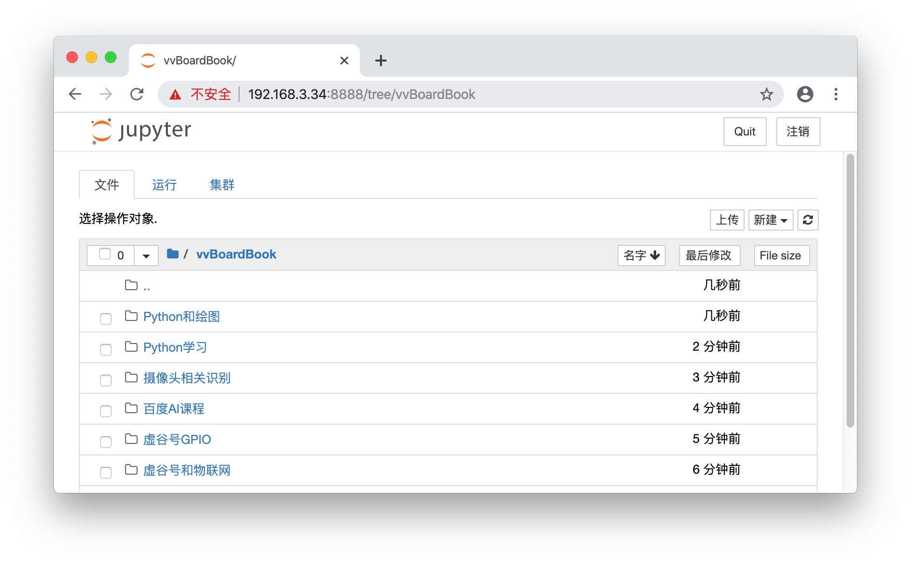
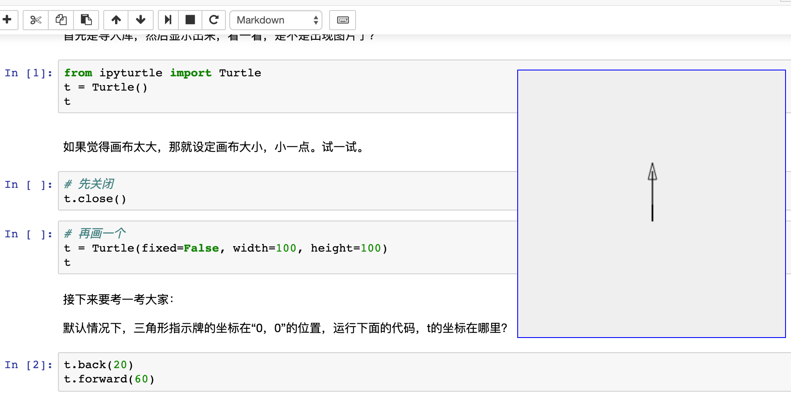
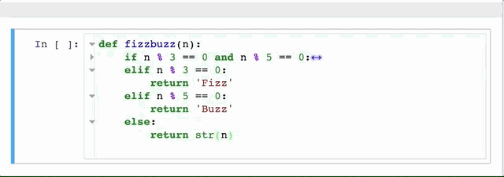

4. Jupyter¶
Jupyter的全称为Jupyter Notebook（此前被称为IPython notebook），是一个交互式笔记本，支持运行40多种编程语言。通过Jupyter，可以通过Web页面在虚谷号上运行Python代码和Linux命令。
Jupyter的本质是一个Web应用程序，便于创建和共享程序文档，支持实时代码，数学方程，可视化和markdown。很多人喜欢直接在Jupyter上写代码，并同步记录学习心得，这样的学习笔记实际上就是一个很好的教程。
4.1. Jupyter快速入门¶
步骤1:访问Jupyter
- 虚谷号提供了多种方式访问Jupyter：
在浏览器直接输入http://【虚谷号IP】:8888。
打开U盘中vvBoard文件夹，如果虚谷号连上Wi-Fi，该文件夹将出现“访问Jupyter”的快捷方式。
虚谷号上的Jupyter默认密码为“scope”。
注：请使用谷歌浏览器（或者使用谷歌浏览器内核的浏览器）访问Jupyter。虚谷号的Wi-Fi有记忆功能，一般来说IP地址是不会变化的。当Wi-Fi信息设置好后，只要提供电源和Wi-Fi信号，就能使用Jupyter来访问虚谷号。

步骤2:运行Linux命令

在仿真的终端页面，Jupyter几乎支持所有的命令，如安装软件、安装Python库文件、运行Python程序等。当关闭窗口后，再次打开，还能够看到之前的命令运行状态。
通过终端页面，还能够看到一共有几个命令窗口在运行。在不同电脑登陆Jupyter，可以共享这一界面。（用于教学非常合适）
步骤3:浏览Jupyter笔记
虚谷号上提供了一些学习笔记，默认放在vvBoardbook文件夹中。
在网上能够找到很多jupyter学习笔记（扩展名为ipynb），如jupyter的官方网站。（https://nbviewer.jupyter.org/）
这些学习笔记中，一般既有用MarkDown语法编写的文字，也有代码。其中代码的左边有“in [ ]”的标识。
用鼠标选中代码输入框（jupyter中称为“单元格”），单元格出现蓝色或者绿色边框，表示被选中。在菜单中选择“执行”命令，单元格的下方将出现单元格代码执行效果。执行完毕后，“in [ ]”中的括号将出现一个数字，表示单元格代码运行的次序。

步骤4:新建Jupyter笔记
Jupyter的笔记内容主要分为两种类型，一种是代码，另一种是文本。代码带有“in [ ]”的标识，支持Python、命令行。文本支持MarkDown语法。
4.2. Jupyter的代码调试技巧¶
1.如何快速运行指定的代码？
Jupyter单元格中的代码，可以按照任意次序进行执行。Jupyter提供了多种执行代码的方式，在“单元格”菜单中。
运行所有单元格
运行所有
运行上面的代码块
运行下面的代码块
2.如何重新启动笔记中的所有代码？
在调试代码的过程中，稍微复杂些的代码，往往需要全部重启，好查看程序的整体效果。如在测试GPIO的代码时，之前的代码对后面的代码会产生影响，这就需要重启服务。具体的功能在“服务”菜单中。
重启
重启 & 清空输入
重启 & 运行所有
3.如何在打开笔记的时候，所有的代码处于未运行状态？
Jupyter笔记会保留代码运行的状态，打开一个笔记往往会看到很多的输出信息。如何让这些信息消失，保持代码的未运行状态？那就需要在关闭笔记前，执行“重启 & 清空输入”，然后保存退出。
4.3. 如何用Jupyter写笔记¶
Jupyter的笔记中既可以插入代码，也可以用MarkDown语法排版的文字。
MarkDown教程：https://baike.baidu.com/item/markdown/3245829?fr=aladdin
Jupyter支持用“CTRL+C”的形式插入图片。
4.4. 虚谷号内置Jupyter教程¶
为了帮助虚谷号用户快速掌握Python编程，虚谷计划团队编写了一系列教程，直接包含在最新的固件中。
1.虚谷号GPIO
为虚谷号的GPIO功能写的课程。
2.百度人工智能
调用百度AI，可以体验人脸识别、OCR、语音识别等功能。
3.物联网应用
使用MQTT协议，借助虚谷号自带的SIoT软件（MQTT代理），实现物联网、智能家居等应用。
借助yeelight库，在虚谷号上编程控制小米灯泡（Yeelight灯泡，价格99元）。
4.视觉识别
-基于OpenCV编写，实现不需要接显示器，能够看到摄像头的图片，能够识别人脸并结合AI做各种应用。
5.教材支持
全国各个高中必修教材的Python案例整合。
国内各个团队编写的Python教材。
6.其他课程
（1）在网页上画画（谢作如）

在网页上，用命令来画各种图形。记着LOGO语言吗？这是一个简化版本。边输代码边画画，很直观，效果也很酷。
（2）Python快速入门（张路、谢作如）
课程的另一个名称是：Python入门教程——用编程的方式让计算机做算术

4.5. Jupyter的高级应用¶
1.如何在笔记中插入Linux系统命令？
只要在命令前加入“！”的标志，如“! ls”就能列出笔记所在的文件夹的所有目录。
2.如何导出Jupyter笔记？
通过“文件”-“下载”。可以下载ipynb，也可以导出html格式的页面。
4.6. Jupyter的扩展插件¶
很多人为Jupyter开发了各种扩展插件，包括支持更多的编程语言、笔记样式等。安装扩展最好的方法是Jupyter NbExtensions Configurator，它提供了一系列标签，只需勾选相应插件就能自动载入。
1.NbExtensions Configurator
用conda安装：
conda install -c conda-forge jupyter_contrib_nbextensions
conda install -c conda-forge jupyter_nbextensions_configurator
或者用pip：
pip install jupyter_nbextensions_configurator jupyter_contrib_nbextensions
jupyter contrib nbextension install –user
jupyter nbextensions_configurator enable –user
2.Collapsible headings
这个扩展在大型Notebook中非常有用，可折叠的标题能帮你收起/放下Notebook中的某些内容，使整个页面看起来更干净整洁。

3.ipywidgets
这个是jupyter的网页控件，可以做出文本框（textbox）、滑杆（slider）、选择框等。
4.Code folding
在Jupyter Notebook中，你能折叠的不只有标题，还有代码。
5.Processing
通过插件，Jupyter还支持Processing、C等。